File list
Jump to navigation
Jump to search
This special page shows all uploaded files.
{kind=link}
{kind=link}
| Date | Name | Thumbnail | Size | User | Description | Versions |
|---|---|---|---|---|---|---|
| 07:56, 19 October 2016 | Sonic Wave.png (file) |  |
471 bytes | Ggboyz | 1 | |
| 22:16, 29 September 2016 | ArclouseDash.png (file) | 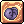 | 472 bytes | Eraquis | 1 | |
| 01:30, 18 September 2015 | Howtogrowplantguide.png (file) | 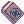 | 472 bytes | AloeLeaflet | 1 | |
| 22:18, 29 September 2016 | LunaticCarrot.png (file) | 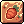 | 472 bytes | Eraquis | 1 | |
| 13:27, 5 October 2016 | Wind Insignia.png (file) |  |
472 bytes | Seandh | 1 | |
| 02:00, 18 September 2015 | Cookinguide.png (file) | 473 bytes | AloeLeaflet | 1 | ||
| 11:11, 16 October 2016 | Knuckle Boost.png (file) |  |
473 bytes | RadenWA | 1 | |
| 01:34, 18 September 2015 | Royaljelly.png (file) | 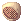 | 473 bytes | AloeLeaflet | 1 | |
| 22:24, 29 September 2016 | TunaParty.png (file) | 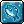 | 473 bytes | Eraquis | 1 | |
| 00:53, 10 September 2015 | White potion.png (file) | 473 bytes | AloeLeaflet | 1 | ||
| 15:04, 5 October 2016 | Elemental Shield.png (file) | 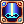 | 474 bytes | LethalConcept | 1 | |
| 00:52, 10 September 2015 | Glistening Coat.png (file) | 474 bytes | AloeLeaflet | 1 | ||
| 00:41, 20 October 2016 | Lost Souls.png (file) |  |
474 bytes | Tokeiburu | 1 | |
| 07:43, 14 October 2016 | Power Absorb.png (file) | 474 bytes | Ggboyz | 1 | ||
| 19:50, 14 April 2016 | 18794.png (file) | 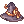 | 475 bytes | Mayo | 1 | |
| 17:47, 15 July 2018 | Card.png (file) |  |
475 bytes | Colours | 2 | |
| 13:23, 5 October 2016 | Fire Insignia.png (file) | 475 bytes | Seandh | 1 | ||
| 06:24, 12 October 2016 | Meteorassault.png (file) | 475 bytes | Windrell | 1 | ||
| 13:27, 5 October 2016 | Water Insignia.png (file) |  |
475 bytes | Seandh | 1 | |
| 16:35, 30 September 2016 | Fortunity - Big Crossbow.png (file) | 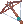 | 476 bytes | Akenoyuki | 2 | |
| 03:10, 18 September 2017 | BRD PoemBragi.png (file) |  |
477 bytes | AloeLeaflet | 1 | |
| 10:28, 10 January 2021 | Mh100001.png (file) | 477 bytes | Hatsumei | 1 | ||
| 11:13, 10 January 2016 | Throw Kunai.png (file) | 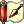 | 477 bytes | Pruu | for use in Pruu's Guide to Kagerou/Oboro for PVM | 1 |
| 01:41, 18 September 2015 | Concentrationpotion.png (file) | 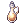 | 478 bytes | AloeLeaflet | 1 | |
| 02:02, 18 September 2015 | Savagemeat.png (file) | 478 bytes | AloeLeaflet | 1 | ||
| 01:30, 18 September 2015 | Highqualitypotionguide.png (file) | 479 bytes | AloeLeaflet | 1 | ||
| 03:03, 24 October 2016 | Recognized Spell.png (file) |  |
479 bytes | Ggboyz | 1 | |
| 20:03, 15 December 2015 | Wrappingpaper.png (file) | 479 bytes | Adri | 1 | ||
| 19:48, 14 April 2016 | 18539.png (file) | 480 bytes | Mayo | 1 | ||
| 15:22, 7 January 2016 | Rapid Throw.png (file) | 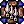 | 480 bytes | Pruu | for use in Pruu's Guide to Kagerou/Oboro for PVM | 1 |
| 13:30, 17 January 2017 | Comet.png (file) |  |
481 bytes | Ggboyz | 1 | |
| 14:29, 29 May 2019 | Spirit of Life.png (file) | 481 bytes | JoaoAlkmim | 1 | ||
| 11:14, 16 October 2016 | Vulcan Arm.png (file) |  |
481 bytes | RadenWA | 1 | |
| 17:54, 14 April 2016 | 12204.png (file) | 482 bytes | Mayo | 2 | ||
| 09:16, 15 July 2018 | 18856.png (file) | 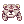 | 482 bytes | Colours | 1 | |
| 00:48, 10 September 2015 | 7136.png (file) | 482 bytes | AloeLeaflet | 2 | ||
| 00:48, 10 September 2015 | Acid Bottle.png (file) | 482 bytes | AloeLeaflet | 1 | ||
| 07:42, 14 October 2016 | Lightning Walk.png (file) |  |
482 bytes | Ggboyz | 1 | |
| 01:31, 18 September 2015 | Maneaterroot.png (file) | 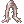 | 482 bytes | AloeLeaflet | 1 | |
| 06:47, 13 September 2017 | Pticon 2priest.png (file) | 482 bytes | Renata | 1 | ||
| 11:24, 16 October 2016 | Madogear License.png (file) | 483 bytes | RadenWA | 1 | ||
| 05:12, 14 February 2020 | Roll.png (file) | 483 bytes | Skorian | 1 | ||
| 15:23, 7 January 2016 | Swirling Petal.png (file) | 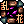 | 484 bytes | Pruu | for use in Pruu's Guide to Kagerou/Oboro for PVM | 1 |
| 15:20, 7 January 2016 | Kunai Splash.png (file) | 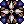 | 485 bytes | Pruu | for use in Pruu's Guide to Kagerou/Oboro for PVM | 1 |
| 14:30, 29 October 2016 | Manhole.png (file) |  |
485 bytes | Ggboyz | 1 | |
| 14:30, 29 October 2016 | Feint Bomb.png (file) | 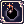 | 487 bytes | Ggboyz | 1 | |
| 20:39, 17 December 2015 | Knitrabbitears.png (file) | 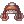 | 487 bytes | Ariden | 1 | |
| 09:41, 9 September 2016 | Tempesticon.png (file) | 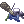 | 487 bytes | Appleproject | 1 | |
| 01:55, 16 April 2016 | 2541 FW larva.png (file) | 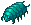 | 489 bytes | Renata | 1 | |
| 19:59, 14 April 2016 | 18849.png (file) | 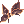 | 490 bytes | Mayo | 1 |
{kind=link}
{kind=link}
{kind=link}
{kind=link}
{kind=link}
{kind=link}
{kind=link}
{kind=link}
{kind=link}
{kind=link}
{kind=link}
{kind=link}
{kind=link}
{kind=link}
{kind=link}
{kind=link}
{kind=link}
{kind=link}
{kind=link}
{kind=link}
{kind=link}
{kind=link}
{kind=link}
{kind=link}
{kind=link}
{kind=link}
{kind=link}
{kind=link}
{kind=link}
{kind=link}
{kind=link}
{kind=link}
{kind=link}
{kind=link}